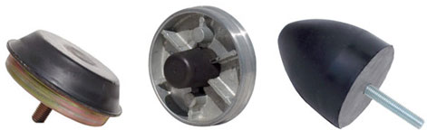
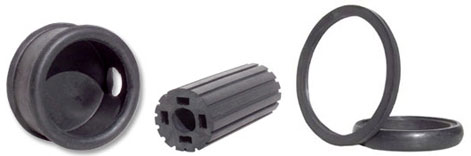
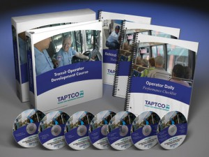
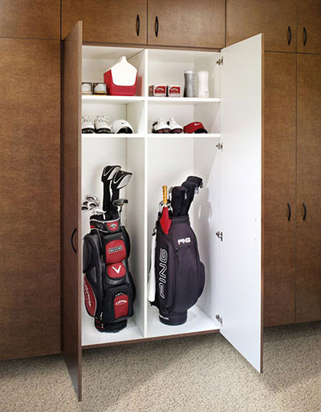
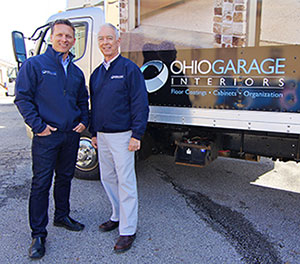
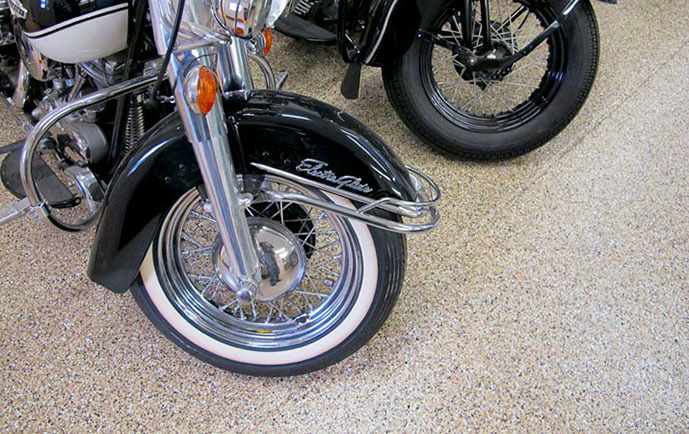
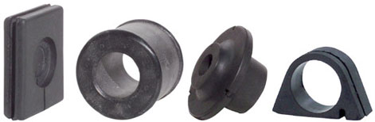
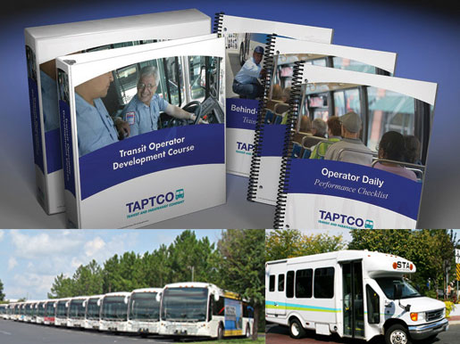
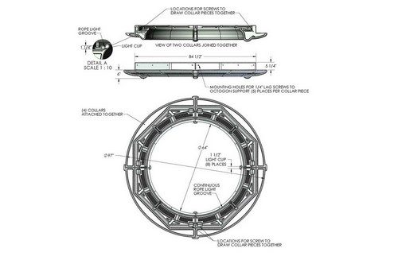
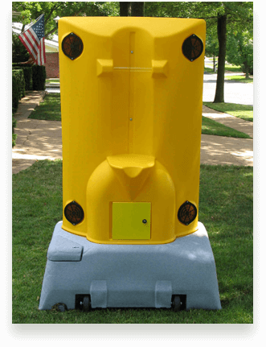

DUI Lawyer Kent Ohio | Davis Law Group If you or a loved one are in need of a DUI lawyer in Kent, Ohio, contact the Davis Law Group’s team of criminal defense attorneys. This law firm can help mitigate the penalties involved with a DUI, DWI or OVI. This team of lawyers is highly … Continue reading “Davis Law Group | DUI Lawyer Kent Ohio”
Lowering Costs with TourTools Package Tour Software Adatavis TourTools is a package tour software created with the intention of reducing operation costs and improving profits for tour operation businesses. TourTools makes package management and communications much simpler for both travelers and vendors; in addition, TourTools makes a substantial improvement for the efficiency and organization of your … Continue reading “Adatavis TourTools | Package Tour Software”
Organization With TourTools | Tour Operator Software Adatavis TourTools is a tour operator software designed to reduce operation costs and greatly improve profits. TourTools significantly increases the efficiency and organization of staff; in addition, package management and communications are made much simpler for both travelers and vendors with TourTools. This program will also lower the time … Continue reading “Adatavis TourTools | Tour Operator Software”

High-Quality Garage Interior Design Ohio Garage Interiors specializes in garage interior design brings garages to a new level of prestige. They install high-end polymer coatings for garage flooring, cabinetry and storage systems. Ohio Garage Interiors is a name associated with variety and durability. They offer a large variety of different styles and utility options, allowing … Continue reading “Garage Interior Design | Ohio Garage Interiors”

Bring Beauty to the Garage | Garage Cabinet Installation Picking the right garage cabinet style can be a difficult choice, but Ohio Garage Interiors has the quantity and quality to get you exactly what you need. Ohio Garage Interiors will give you a cabinetry with a long lifespan and visual appeal. They also make cleaning … Continue reading “Ohio Garage Interiors | Garage Cabinet Installation”

Upgrade Your Garage | Garage Flooring Epoxy Coatings Are you in need of a garage flooring epoxy coating that will actually last? Ohio Garage Interiors can give your garage the upgrade of a lifetime. Naturally, garages are high-traffic spaces, which means they need a quality coating if they want withstand the barrage. Ohio Garage Interiors … Continue reading “Garage Flooring Epoxy Coatings | Ohio Garage Interiors”

About Hal Becker | Sales Trainer Akron Ohio Hal Becker is a sales trainer in Akron, Ohio, with nationally recognized accomplishments. Becker is not only an extremely successful trainer in sales but also a widely known author and public speaker. He is the author of book Can I Have Five Minutes of Your Time? Many corporations recognize this book as their … Continue reading “Hal Becker, Sales Trainer Akron Ohio | The Becker Group”
Performance Automotive Parts | Ladder Bar Suspension All Northeast Ohio drag racers and car lovers in need of an upgrade should to check out Southside Machine. Southside Machine is a drag racing and performance automotive parts company based in Akron, Ohio. They specialize in designing high-quality components such as traction bars, lift bars and ladder … Continue reading “Ladder Bar Suspension | Southside Machine”

History of Southside | Control Arms Manufacturer If you are looking for quality control arms in Northeast Ohio, Southside Machine can help you out. Southside Machine, an Akron-based company, specializes in performance automotive products. These products include control arms, traction bars and other authentic race products. Southside’s history is one of success and accomplishment. Southside … Continue reading “Southside Machine Control Arms | Performance Manufacturing”

What is Southside Machine? | Suspension Traction Bar Keeping your car at peak performance is incredibly important, and Southside Machine has the suspension traction bar that will satisfy your needs. Southside Machine is an Akron-based company that specializes in the products designed to significantly improve traction and reduce wheel hop. They make products such as ladder bars, … Continue reading “Suspension Traction Bar | Southside Machine Products”
Pass the CDL Written Test with the Help of TAPTCO The Transit and Paratransit Company (TAPTCO) is now offering CDL Written Test Training Courses for anyone in need of a commercial driver’s license. It can be a challenge to mold CDL applicants into certified bus drivers, and many exceptional applicants have fallen short due to difficulties with the … Continue reading “The CDL Written Test Training Course | TAPTCO”
Staying Safe with the CDL Written Test Training Course For anyone in need of a commercial driver’s license, the School Bus Training Company of Hudson, Ohio, is offering CDL Written Test Training Courses with all the necessities for the certification process. The courses are built on a series of safety videos with the goal of changing driver … Continue reading “New CDL Written Test Training Course for School Bus Safety”
Greg Stout is a freelance rotational molding designer who specializes in rotational molding design, blow molding design, thermoforming / vacuum forming design, and injection molding design. His company Blue Reed was set up for just that and Stout and his team can guide you through each step of the design process while creating a high … Continue reading “Rotational Molding”

With all the talk today about school safety, one thing that can be overlooked is school bus safety. For over twenty years, the School Bus Safety Company has been creating programs, videos and driver training courses to ensure that your most precious cargo is safe and prepared in case of an emergency. Located in Hudson, … Continue reading “School Bus Safety”

Want to make choosing leadership development programs and a business consultant in Findlay Ohio easier? Then choose Aegis 360 Consulting to make it that much simpler. Founder Ned Parks knows how important it is to incorporate the right leadership development program into a business and he and Aegis 360 want to help you do the … Continue reading “Leadership Development Programs | Business Consultant Findlay Ohio”
Ever think your business could use a business consultant around Mansfield, Ohio or you could use a leadership development program? Look to Aegis 360 Consulting to make your business into something bigger, better and more organized. They understand the amount of time, energy, and money you invest into your business. They want to help you … Continue reading “Business Consultant Mansfield Ohio | Leadership Development Program”
If you’re needing a DUI lawyer in Alliance, Ohio, contact Davis Elliot right away. DUI charges can impact your career and even the rest of your life. The lawyers at Davis Elliot, LLC understand this and will fight to protect your rights and represent you to the best of their ability. They are experienced lawyers … Continue reading “DUI Lawyer Alliance Ohio”

Wanting a reliable manufacturer for a Mustang crossmember? Well look no further with Advanced Resources’ product line, G Force Performance Products. They are made by car people, for car people. They understand that cars are not only a necessity but a livelihood as well. Specializing in the design and manufacture of automotive components and accessories … Continue reading “Mustang Crossmember & Mustang Upper Control Arms”
Criminal Defense Lawyer Ohio | Hiltner Law You would never think you would need one, but when it happens and you need a good criminal defense lawyer, contact Hiltner Law. He is an expert in criminal litigations and a defense lawyer. Hiltner has defined countless clients in a variety of cases. Clients range in the … Continue reading “Criminal Defense Lawyer Ohio | Ohio Defense Lawyer”
In need of traction bar, ladder bars and more? Southside Machines has what you need, whether it’s for drag racing or performance automotive aspects. Southside Machines’ label is carried by Advanced Resources, who specializes in complex product line manufacturing. From the latest in design engineering, through extreme tolerance CNC machinery, and multi-stage finishing processes, they have … Continue reading “Traction Bars from SSM”
Contractors Hub have a innovative and wonderful roofing software/siding estimating software available for use today. The software allows the user to automate their estimating and ordering processes. Build professional, accurate estimates in minutes and at the push of the button send the estimate to your customer, order job materials from your vendors, add to production … Continue reading “Roofing Software/Siding Estimating Software”

In need of a DUI lawyer in Barberton Ohio? Do you need experienced professionals who know what they are doing and can help you in the best way possible? Then you need the lawyers at the firm of Davis Elliot LLC. The last thing anyone wants to need is a DUI attorney, but if you … Continue reading “DUI Lawyer in Barberton Ohio | OVI Lawyer”

Needing an experienced business consultant in Wooster Ohio? Then Aegis 360® Consulting is the place for you. They can provide leadership coaching that will help your business evolve into things you never even thought possible. Since 2,000, the team at Aegis 360 has been working with companies and organizations, helping them with profit modeling, strategic … Continue reading “Business Consultant in Wooster Ohio”

In the market for some high quality, dependable ladder bars? If you do any kind of drag racing or high performance car work then you might recognize the name of Southside Machines. It’s been the number one brand of choice with mechanics and car enthusiasts for years. While the company is no longer around, it … Continue reading “Ladder Bars”
Are you worried about school bus safety for your school district or wish you had some sort of school bus safety video to show your students or children so they are more aware of the dangers around them? The School Bus Safety Company located in Hudson, Ohio has just that and more. For over twenty … Continue reading “School Bus Safety Video and School Bus Driver Training Videos”
In need of custom engraved awards and plaques? Come on down to Olympic Awards. They are a locally-owned business with over 30 years of experience, providing custom engraved plaques, trophies, clocks, nametags, crystal, medals and more. They serve Hudson, Aurora, Cuyahoga Falls, Stow, and other Northeast Ohio locations. Olympic Awards also offers the lowest pricing … Continue reading “Custom Engraved Awards And Plaques”

Greg Stout is the founder and owner of plastic design company, Blue Reed LLC, in Stow, Ohio and his company also offers rotational molding design guidelines to make sure your product is the best it can be. Blue Reed is no stranger to the plastic industry. Here are some tips that they have created over … Continue reading “Rotational Molding Design Guidelines”

There are many things that make Qualiform stand out from other rubber companies. They have over 130 years combined of experience with their highly skilled technicians, they will help you design your rubber product every step of the way be it by drawing or consultation, and their products are 100% manufactured in the United States. … Continue reading “Rubber Companies | Rubber Company”

In 1976, Qualiform Rubber Inc. was established and has today become one of the top rubber manufacturing companies in the nation. They offer many services including rubber compression molding, custom transfer molding, custom rubber injection molding, and rubber to metal bonding. Whatever your needs are, Qualiform will be there to help. If you need help … Continue reading “Rubber Manufacturing Companies”

Western Reserve Chemical has many rubber accelerators fit for many processes, including CAS# 95-31-8. It is a TBBS accelerator for rubber with a delayed action accelerator for use in natural rubber and synthetic rubbers such as SBR, BR, NBR and EPDM. The WRCHEM accelerator is unique in that it has lower scorch than CBS and … Continue reading “CAS# 95-31-8”

Western Reserve Chemical is more than just a chemical company because they offer a full range of rubber accelerators to increase the speed of the vulcanization of rubber. They supply both primary and secondary accelerators that match perfectly with both natural rubber and synthetic rubber compounds including NR, CR, SBR, NBR, BR, EPDM and chlorobutyl … Continue reading “Rubber Accelerators”

Styrenated phenol both distyrenated and tristyrenated phenol are available in the extensive WESTCO™ product line. With Western Reserve Chemical, you get quality and assurance in all their products. Their SP-120 is FDA approved for use in rubber articles and parts intended for repeated or continuous food contacts. What it is is a pale yellow to … Continue reading “Styrenated Phenol”
Supplying chemicals and additives to compounders and formulators of rubber, plastics, adhesives, sealants and coatings and even a TBBS accelerator for rubber, Western Reserve Chemical has been a premiere company since 1979 that is highly renowned. With global sourcing and nine distribution warehouses, WESTCO can deliver high-quality and cost effective products that are used in … Continue reading “TBBS Accelerator For Rubber”

NEOPOP is Northeast Ohio’s leader in point of purchase displays. They specialize in producing cost-effective, high-impact custom point of purchase displays, or POP, and have been doing so for over 25 years. The company continues to develop smart, innovative designs and utilize manufacturing processes that allow them to develop the perfect displays to showcase your products. The … Continue reading “Point Of Purchase Displays”
When you are looking for a garage flooring contractor, look for father and son team Scott & Chad Gleske of Ohio Garage Interiors. The business is located in Strongsville, Ohio and they are the leading garage enhancement service in the area. At Ohio Garage Interiors, they know high-traffic spaces demand high-performance coating systems. The Ohio … Continue reading “Garage Flooring Contractor”

Aegis 360 Consulting is a global provider of business and leadership coaching and staff development services that help organizations improve leadership competencies, discover and align business strategies, and improve culture through employee engagement efforts. Started in 2000 by Ned Parks under the previous name of New Directions, Aegis 360 Consulting, Inc has been re-branded but has kept the high standard … Continue reading “Leadership Coaching”
Solon retail center, The Shoppes of Solon North, would like to welcome you to their shopping plaza! They have a variety of merchants for you and the whole family to choose from. With many different options and things to do, Solon North never disappoints in offering fun activities and products that satisfy a wide collection … Continue reading “Solon Retail Center”

DRM Wood Products, LTD would like to thank you for considering them as your woodworking company and for your OEM wood parts needs. They take pride in their reputation as one of the best woodworking companies in the Akron and Cleveland metropolitan areas. Their reliable service and skilled staff make DRM Wood Products stand out … Continue reading “Woodworking Company | Aron Ohio Woodworking”
In 1996, Harb Renovation and Restoration was founded to produce professional quality work for people seeking a home remodeling contractor who will take their projects to the next level. Located in Brecksville, Ohio, they bring nearly two decades of professional experience to the table. Whether you need basic improvements to your kitchen or bathroom or … Continue reading “Home Remodeling Contractor”

When you need an attorney in Medina, Ohio fast, you need Cameron B. Pedro. They provide representation for criminal defense cases, DUI, OVI, domestic, and personal injury claims. Cameron B. Pedro also serves the Brunswick, Wadsworth and surrounding areas, and provide a full range of legal services that also include divorce, child custody and child … Continue reading “Attorney In Medina, Ohio”

With president Jeff Cassell at the helm, Hudson based TAPTCO Transit and Paratransit Company has been offering renowned services with their bus driver training course and products including high quality videos and books for over twenty years. Previously their work had been private label and not available to district fleets until now. The Transit & … Continue reading “Bus Driver Training Course”

Transform your space with Ohio Garage Interior signature garage solutions like garage cabinets and storage solutions. The family owned company, started by Chad & Scott Gleske, gives your garage a new makeover and challenges what a normal garage can be with their quality products designed to handle the tough foot traffic and temperatures that a … Continue reading “Garage Cabinets”

Locally owned and operated by the father and son team of Chad & Scott Gleske, Ohio Garage Interiors specializes in garage enhancement, which involves the installation of high-end polymer garage flooring coatings, cabinets and storage systems. With Ohio Garage Interiors, they can help you get organized and clean so you can focus on what really … Continue reading “Garage Flooring”
Located in Akron, Ohio, Malin Company Inc. offers specialty packaging and distribution of stainless steel wire. Since 1884, Malin Co. has also offered copper wire and safety lockwire that can be used in marine, brush, industrial or medical services. With many stainless steel wire to ANSI standards selections to choose from, they offer the best … Continue reading “Stainless Steel Wire”

Since 1948, Jaco Molding Products, an injection molding company in Ohio, has offered custom injection molding of thermoplastic materials up to 29 oz. Their reputation for injection mold technology has established Jaco Products as experts and leaders in production and precision plastic injection molding services and they also offer parts at a competitive price within … Continue reading “Plastic Injection Molding Companies | Ohio”

Greg Stout is a plastic product designer and freelancer with over twenty-five years experience in plastic product designing and over fourteen years experience in the rotational molding process. He is the head of Blue-Reed LLC, a plastic product design company located in Stow, Ohio and offers a variety of services with a vast network of … Continue reading “Plastic Product Designer”
Susan Perry, a retired federal agent, is an infidelity expert and now author, who wants you to recognize the signs of infidelity in your marriage or relationship. She has had personal experience with the issue by being married to a commercial airline pilot for over seven years, not thinking she would ever have to draw … Continue reading “Signs of Infidelity”
Thomas, Trattner & Malone LLC are the most experienced bankruptcy attorneys in Akron, Canton, Akron, Medina, and Youngstown, helping individuals and businesses find the best solution to their simple or complex financial situation. Comprised of four attorneys who each share background, education, experience and training in specific areas of the law, Thomas, Trattner & Malone … Continue reading “Bankruptcy Attorneys | Akron, Ohio”
The experts at the Transit & Paratransit Company (TAPTCO), located in Hudson, Ohio, have been designing bus driver training programs for bus drivers for more than 20 years. Until recently, their work has been private-labeled and not available to district bus fleets before. Now their award winning programs, including their breakthrough bus safety videos, are … Continue reading “Bus Driver Training”
Aegis 360 Consulting, Inc., formerly known as New Directions, was started in 2000 by Ned Parks who is a business consultant in Akron, Ohio with a focus on leadership/supervisory training and conflict mediation. The company is a global provider of business consulting and staff development services that help organizations improve their leadership, discover and better … Continue reading “Business Consultant In Akron Ohio”

We’d like to introduce you to Western Reserve Chemical Corporation, who is a premier distributor of rubber chemicals and industrial intermediates. They provide a broad range of WESTCO brand chemicals including antioxidants, accelerators, tackifiers and retarders. Featuring 9 locations across the US to provide fast, convenient service of your rubber chemicals. From their nine distribution … Continue reading “Rubber Chemicals Manufacturer”

A plastics design takes precision and time. It takes skills that not many people have and it takes patience and diligence to complete. The person able to do just that, is Greg Stout. His company Blue Reed specializes in rotational molding design and plastics designs. Whether it’s rotational, injection or blow molding, Blue Reed has … Continue reading “Plastics Design”

Rubber seal products, rubber parts and gaskets are vital for preventing seepage of moisture or air. Trust Qualiform Rubber Inc., to handle all your rubber needs. They’ve been in the business since 1976 and their team has over 130 years combined experience and skill. No matter the application or the need, they provide a comprehensive … Continue reading “Rubber Seal Products”
At Ohio Garage Interiors, the team knows that garage organization can be a daunting task. With heavy footpath flow and extreme temperatures, the garage seems like it will never be a place to get de-cluttered or enjoy. Now, getting organized never looked so good! Ohio Garage Interiors wants you to see the potential it has … Continue reading “Garage Organization”

What other rubber manufacturer has over 130 years of combined experience with their technicians? Not many, that’s for sure. With Qualiform Rubber Inc., you get that level of experience plus more. You get quality, rock star service and 100% of their products being created in the United States. Whether Qualiform manufactures rubber parts like grommets, … Continue reading “Rubber Manufacturer”

Ohio Garage Interiors, started by father and son team Chad & Scott Gleske, has been serving the Northeast Ohio area with their quality products like epoxy garage flooring and storage solutions to fit any need you have to re-invent your garage. Their products are made to withstand the harsh elements of a garage environment but … Continue reading “Epoxy Garage Flooring”

Industrial rubber products can be complicated to get information on or can be expensive but that’s not the case with Qualiform Rubber. Since 1976, Qualiform has been offering rubber services in compression molding, custom rubber injection, and more to industries like aerospace, medical or home and appliance. With their versatile systems and expert crew, they … Continue reading “Industrial Rubber Products”
If you’ve ever wondered if you spouse or partner could be cheating, take Susan Perry’s infidelity test. It only takes five minutes and has twenty-four questions. Susan has had first had experience with infidelity when she was married to a commercial airline pilot for more than seven years. She never thought she would have to … Continue reading “Infidelity Test”
The School Bus Safety Company in Hudson, Ohio provides courses for school bus driver training.� The courses are built around high quality safety videos that change the behavior of drivers to avoid accidents and keep everyone safe. Recently, the School Bus Safety Company has re-created their driver training course and has added ten additional subjects … Continue reading “School Bus Driver Training | School Bus Training Courses”

Ohio Garage Interiors was started by father and son, Chad & Scott Gleske, and it has risen to become the leading garage floor epoxy coating and storage solution companies in Northeast Ohio. With a variety of styles, colors, and installation options, garage flooring and organization has never been more stylish or affordable. Ohio Garage Interiors … Continue reading “Garage Floor Epoxy”
POP displays mean point of purchase. With NEOPOP, the leading manufacturer of POP displays in Northeast Ohio, they will make sure that your products are displayed properly and effectively as to boost your sales. With over 25 years experience, the team blends engineering, creativity, powerful marketing design and state-of-the-art manufacturing to deliver merchandising, POP displays and … Continue reading “POP Displays”

Qualiform is a rubber products molding company that offers quality rubber products. They can custom make the items you need using techniques like compression molding, custom transfer molding, custom rubber injection molding, and rubber to metal bonding by a staff with over 130 years combined knowledge in the field. Qualiform takes pride in what they … Continue reading “Rubber Products”

The best DUI/OVI lawyers in Canton Ohio are the ones from the Davis Law Group. With roots dating back to 1979, the Davis Law Group has been fighting for people’s rights and legal representation with the kind of care and skill that only an experienced law group can have. The team understands the value of … Continue reading “DUI Lawyer Canton Ohio / OVI Lawyer Canton”

Jaco Products is at the number spot on the list for plastic manufactures in Ohio. Since 1948, Jaco has been offering services in plastic injection molding, stamping, and has had over 56 years experience in precision plastic machining. The technical staff is highly skilled and can help you in many services along with the progressive … Continue reading “Ohio Plastic Companies | Plastic Manufacturers In Ohio”
The Law Office of Pedro Law. provides criminal defense advice and representation through their attorneys. Recently, their Pedro Law helped the owner of Medina Motorsports when he was facing criminal defense charges. The Medina, Ohio attorney Cameron B. Pedro are knowledgeable about how the courts work, even with domestic violence cases. If you are looking … Continue reading “Medina, Ohio Attorneys | Criminal Defense”
When looking for high quality and reliable rubber metal bonding parts, contact Qualiform today! They take all regulations within the industry you need the parts for and federal guidelines very seriously. The staff at Qualiform is well-trained in the area guaranteeing you will get a sturdy, reliable and quality product that meets the guidelines every time. Their goal … Continue reading “Rubber to Metal Bonding Parts | Qualiform”
When looking for a custom display for your product, contact NEOPOP. Custom metal working is great for a permanent point-or-purchase display to enhance the sales of your product. They can create durable and attractive displays based on your requirements and specifications. They have a variety of metal working items to help you display your product, … Continue reading “Metal Working | NEOPOP”
Looking for a way to display your product and get attention from customers? NEOPOP’s point of sale display can help reach your sales goals by creating a display unique to the product you are selling. They will help bring customers to your product through a custom display, which can be altered at anytime to keep … Continue reading “Point of Sale Display | NEOPOP”

For over twenty-five years, Greg Stout has been a plastic product designer and for over fourteen years, he has also been a rotational molding designer with his company Blue-Reed LLC. Located in Stow, Ohio, Stout and the experts Blue-Reed have worked to create a company that is innovative, experienced, and allows the client to access … Continue reading “Rotational Molding Designer”

Since 1976, Qualiform has been the leader in rubber molding, with a staff that has over 130 years combined experience and knowledge. Their quality customer service has earned them an enviable reputation in care and satisfaction. Offering rubber compression molding, rubber transfer molding and rubber injection molding, and an extensive line of services such as … Continue reading “Rubber Molding”

Taptco offers a bus driver training program to help your drivers be the safest on the streets. They strive to help drivers be safer, more efficient and be on time. There main focus is safety, but they train drivers in customer service as well. Taptco helps new and experience drivers feel confident in the decisions … Continue reading “Bus Driver Training Program”
If you are looking for the best and modern bus driver training courses, contact Taptco today. They offer twenty-eight different training course that come with comprehensive guides and course materials. The materials are up-to-date, and their courses are behavior-based to keep drivers interested. Taptco teaches drivers how to be confident with their actions, good customer service, … Continue reading “Bus Driver Training Courses”
A lawyer in Medina, Ohio cannot come more recommended than Cameron B. Pedro, a highly skilled lawyers that offer many services, the bulk of them being criminal defense, domestic and family law, juvenile, and personal injury. Whether going through a divorce, being accused of a crime or you have been in an accident, you need … Continue reading “Lawyer in Medina, Ohio”

Rotational molding companies can offer wonderful services to your plastic product design in a unique way. Different from the regular plastic molding process, rotational molding requires certain molds for certain results and different tools than regular plastic molding. To find a designer and engineer can be tricky but look no further with Greg Stout and … Continue reading “Rotational Molding Companies”
Custom millworking from NEOPOP brings a professional appearance to your business. While working with NEOPOP, we have been able to learn more about NEOPOP and the custom millworking that they do so well. Displays, shelving, and kiosks, are all beautifully made with NEOPOP’s custom millworking whether they are manufactured in wood, glass, veneers, or a … Continue reading “Custom Millworking”
Laser Hair Removal Akron Ohio Physicians AquaFit proudly provides safe, affordable, and effective laser hair removal in Akron Ohio. This laser hair removal Akron Ohio, will comfortably remove the hair of anyone, regardless of skin tone or gender. Their versatile and smart technology at Physicians AquaFit, enables them to successfully gear the treatment to every … Continue reading “Laser Hair Removal Service Akron Ohio”
Rotational molding design can be a tricky business. Sometimes the results are not what you want them to be and other times, they more than you could ever want them to be. But in the hands of Greg Stout and his freelance company, Blue Reed, rotational molding design doesn’t have to be tricky. He has … Continue reading “Rotational Molding Design”
Whether you are looking to purchase or sell hydraulic truck cranes, Tom Kasner Crane Sales Inc. has the knowledge of the business and experience with the equipment to assist you and your project. Tom Kasner’s inventory of hydraulic truck cranes offers a selection of different makes and models of the past decade. If you can’t … Continue reading “Hydraulic Truck Cranes for Sale | Lattice Truck Cranes”
Tom Kasner Crane Sales Inc. has spent over 15 years supplying used cranes to the lifting industry and building lasting relationships with customers. If you are seeking all terrain cranes for sale, the approved inventory at Tom Kasner Crane Sales Inc. features an extensive variety of makes and models for different projects and applications. If … Continue reading “All Terrain Cranes for Sale from Tom Kasner Crane Sales, Inc.”
Through true integrity and proven credibility, Tom Kasner Crane Sales Inc has enjoyed more than 15 years of continued success providing used cranes to the lifting industry. Customers know they can rely on Tom Kasner’s 34 years of equipment experience and knowledge to help find the right used cranes for sale. With a vast pre-inspected … Continue reading “Used Cranes for Sale | Carry Deck, Hydraulic, All Terrain”
If you are seeking a bankruptcy Lawyer in Akron, Ohio with experience and success, look no further than Thomas, Trattner, Malone, LLC, a premier Northeast Ohio law firm of four educated and experienced attorneys. More than 50 years in combined experience between our esteemed attorneys that value unparalleled and reassuring professionalism and customer service. We … Continue reading “Bankruptcy Attorney Akron, Ohio | Thomas, Trattner, Malone LLC”
Malin Co. is the leading supplier of safety wire for aerospace, jewelry, and medical applications. Available in aluminum, brass, copper, and stainless steel, Malin delivers not only exceptional service but top quality safety wire for the aerospace industry. Our exclusive safety wire canister is molded from high-density polyethylene. Unlike standard paper canisters, Malin’s wire Dispensing … Continue reading “Top Quality Safety Wire only by Malin Co.”
Located in Northeast Ohio, NEOPOP has led POP display companies throughout the region, providing marketing solutions for countless customers through custom point of purchase displays. Having over 25 years in plastics manufacturing and custom mill working equipment, we at NEOPOP produce captivating displays that come cost-effectively. Ingenuity in design and manufacturing processes enable us to … Continue reading “POP Display Companies”
Our custom plastic POP displays effectively exhibit and market a variety of retail products. At NEOPOP, we employ plastic processes such as injection molding, thermoforming (vacuum forming), and plastic fabrication to produce the best components for marketing your unique product at the point of sale. Our thermoformed and plastic injection molded custom plastic POP displays … Continue reading “Custom Plastic POP Displays by NEOPOP”
With NEOPOP, point of purchase displays are developed and produced specifically to fit our customer’s vision of their point of sale marketing goals. With more than 25 years of plastic manufacturing experience, we know the processes, materials, and hardware that will elevate your display marketing and increase sales at the point of purchase. In addition … Continue reading “Point of Purchase Displays Designed by NEOPOP”

Since 1979, Western Reserve Chemical has been a premiere company that specializes in rubber products, chemicals and even has an MBTS accelerator for rubber. WESTCO is also a premier distributor of specialty chemicals and industrial intermediates to compounders and formulators. They provide a broad range of WESTCO brand chemicals including antioxidants, accelerators, tackifiers, retarders, waxes … Continue reading “MBTS Accelerator For Rubber”
Through years of experience of designing and manufacturing for the point of sale, our crew at NEOPOP continues to reward customers with intuitive design and captivating custom POP displays that can elevate your brand to the next level. Our versatile facility offers everything from metal working, plastic, mill-working, thermoforming, and plastic injection molding. In order … Continue reading “Custom POP Displays | NEOPOP”
Styrenated phenol CAS# 61788-44-1 Western Reserve Chemical, a premiere supplier of styrenated phenol applications both distyrenated and tristyrenated phenol, leads the market in manufacturing and distributing this plastic/rubber antioxidant. It is FDA approved for rubber product used in contact with food. Westco phenols are mostly used in elastomers and SBR Western Reserve Chemical, or wrchem, as we refer … Continue reading “Styrenated Phenol”
TTMLAW is a firm of bankruptcy lawyers in Akron, Ohio, and they also serve the Canton, Akron, Medina and Youngstown areas as well. As one of the most experienced and skilled firms in Akron, the team at Thomas, Trattner & Malone LLC deal with areas of practice such as chapter 7, 11 and 13 bankruptcy … Continue reading “Bankruptcy Lawyers In Akron, Ohio”

With over thirty years experience in rubber molding and as rubber parts manufacturers, Qualiform is the company that focuses solely on the manufacturing of custom molded rubber products. It has earned an enviable reputation for quality and commitment to customer service. Offering multiple services like rubber compression molding, rubber transfer molding and rubber injection molding, … Continue reading “Rubber Parts Manufacturers”
Through years of experience developing and producing for the point of purchase, our crew at NEOPOP continues to reward customers with brilliant design and effective custom point of purchase displays that can hoist your brand to the next level. Our multipurpose facility offers everything from metal working, plastic, mill-working, thermoforming, and plastic injection molding. In … Continue reading “Custom Point of Purchase Displays | NEOPOP”
Physicians AquaFit is proud to provide effective laser hair removal in Akron, Ohio that is safe, comfortable, and effective for men and women and for any skin tones including dark skin and suntanned. At Physicians AquaFit, our versatile and smart technology enables us gear the treatment to every patient’s unique characteristics and complexions for successful, … Continue reading “Laser Hair Removal | Akron, Ohio”
Carried over from Italy into Canada in the 1980s, music garlic has become one of the most popular hardneck garlic for chefs around the world. As a hardneck garlic, music garlic enjoys the cold weather when growing are very hardy garlic that grows well in most of the USA. Typically planted before the first frost … Continue reading “Music Garlic from Ohio's BJ Garlic”
Providing healthy interior environments and a sustainable lifestyle with low maintenance costs, efficient green homes by Kertes are designed to achieve optimal eco-friendly efficiency and luxury within modern home living. Located in Orange Village, Ohio, the Lakes of Orange is the first Green Certified Community in Ohio and it embodies an innovative, natural, and eco-friendly … Continue reading “Efficient Green Homes | Kertes Enterprises, Inc.”
When you are facing charges for a misdemeanor or traffic violation in Wooster, Orrville, or Rittman, you need a Wayne County Municipal Court Lawyer to defend you throughout the legal process. An experienced Wayne County Municipal Court attorney’s knowledge of local court rules, filing procedures, and precedent can prove invaluable when mounting your legal defense. … Continue reading “Wayne County Municipal Court Lawyer”
Providing healthy interior spaces and a sustainable lifestyle with low maintenance costs, new efficient green homes by Kertes are designed to achieve optimal eco-friendly efficiency and luxury within modern home living. Located in Orange Village, Ohio, the Lakes of Orange is the first Green Certified Community in Ohio and it embodies an innovative, natural, and … Continue reading “New Efficient Green Homes | Kertes Enterprises, Inc.”
The Lakes of Orange is to be the first Green Certified Community in Ohio as Kertes Enterprises is offering an opportunity to experience the life of sustainable luxury with their nationally recognized green homes and property. The Lakes of Orange community is as innovative as it is natural, and supports an eco-friendly lifestyle through the … Continue reading “Green Homes and Property | Lakes of Orange”
As a Wooster DUI lawyer, Cameron B. Pedro has the legal experience to defend you against DUI charges. They know the protocols, equipment, and science involved in blood alcohol content (BAC) testing, and can identify the countless technical flaws that can cast doubt on your breath, blood, or urine test. When the State must prove … Continue reading “Wooster DUI Lawyer | Wooster DUI Attorney”
Providing healthy interior environments and a sustainable lifestyle with low maintenance costs, New Green Homes by Kertes Enterprises are designed to achieve optimal eco-friendly efficiency and luxury within modern home living. Located in Orange Village, Ohio, the Lakes of Orange is the first Green Certified Community in Ohio and it embodies an innovative, natural, and … Continue reading “New Green Homes at Lakes of Orange | Kertes Enterprises, Inc.”
Are you seeking a new green home builder for your new home? Kertes Enterprises is the area’s leading builder of homes that are both luxurious and sustainable. Kertes’ new green homes are built to the nationally recognized energy-efficient, eco-friendly, and sustainable standards of the National Green Building Standard, and can be constructed upon your lot … Continue reading “Green Home Builders | Kertes Enterprises, Inc.”
Under Ohio law, misdemeanors are crimes punishable by up to 180 days in jail and a $1,000 fine. They are crimes that lawmakers have designated as less serious than felonies, but that does not mean they should be taken lightly. Facing a misdemeanor charge without the advice and counsel of a dedicated misdemeanor lawyer can … Continue reading “Misdemeanor Lawyer”
At ADVAN, our SEO services continue to grow as we add Medical Maxx, an Akron company who wants to improve their Google positioning for searched relating to refurbished MRI equipment and refurbished CT scanners. Medical Maxx is a distributor of refurbished medical imaging equipment from all of the major OEM’s including Siemens, Philips, Toshiba, GE, … Continue reading “Medical Maxx – New Client for Refurbished MRI Equipment and Used CT Scanners”
A DUI is a serious offense with major consequences. Jail time, fines, license suspension, loss of employment, and insurance issues may come swiftly and can tear your life apart. With the stakes this high, you need a trusted and tested DUI Lawyer at your side to fight the charges. DUI lawyer Cameron B. Pedro has … Continue reading “DUI Lawyer / Attorney”

Many companies are being approached by SEO businesses who claim to be experts in the industry, even promising a certain number of hits each month due to their SEO efforts. And if you’re like Cameron B. Pedro, you know that their promises can be hollow. Some companies can spend hundreds or even thousands of dollars … Continue reading “Pedro Law, Medina Child Custody Lawyers Experts, See Real SEO Results”
Get the best representation from Cameron B. Pedro, criminal defense attorney Medina Ohio. ADVAN has been working with Cameron B. Pedro, criminal defense attorney Medina Ohio, for the past two months revamping their site for improved search engine optimization and building an external link profile that will boost positioning and site authority in Google’s eyes. We … Continue reading “Criminal Defense Attorney Medina, Ohio | Cameron B. Pedro Attorney at Law”
Jaco has provided CNC plastic machining to the Ohio region for more than 60 years. With their continued investments into advanced plastics technology and equipment, Jaco’s capabilities have resulted in the finest quality products at a competitive price. Count on Jaco to provide complete solutions for your engineering and CNC plastic machining needs. Superior CNC … Continue reading “Expert CNC Plastic Machining in Ohio by Jaco”

When looking at rotational molders for your plastic product, there are many things to consider. Greg Stout and his company, Blue Reed, specialize in plastic rotational molding and not only does he specialize in design, but he specializes in engineering as well and has for over 25 years. Here are four things to take into … Continue reading “Rotational Molders”